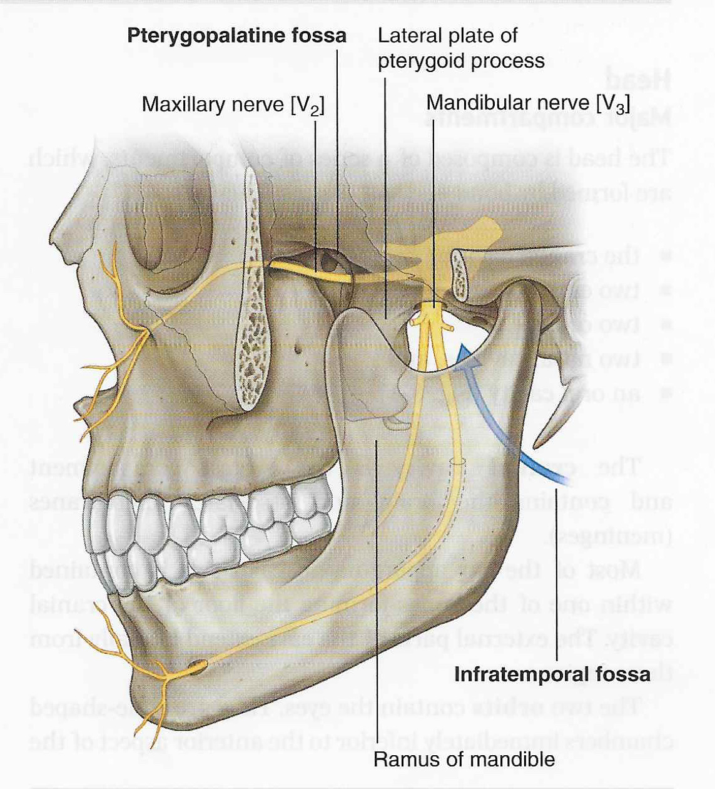

Neurology 5 - Module 2 - Infratemporal Fossa: Page 1 of 2
×

READINGS:Gray's Anatomy for Students (Fourth Edition): Pages: 826, 970-981 |
|  |
| Tap on image to enlarge |
| The Infratemporal Fossa is defined by the following landmarks: |
| Add the skull. |
| Remove the mandible. |
| Remove the zygomatic bone. |
| The roof of the Infratemporal Fossa is formed by: |
| Highlight the sphenoid bone . |
| Highlight the temporal bone . |
| The medial wall of the Infratemporal Fossa is formed by: |
| The pterygoid process of the sphenoid bone. |
| Add the levator veli palatini muscle. |
| Add the tensor veli palatini muscle. |
| The anterior wall of Infratemporal Fossa is formed by: |
| Highlight the maxilla. |
| The lateral wall of the Infratemporal Fossa is formed by: |
| Add the mandible. |